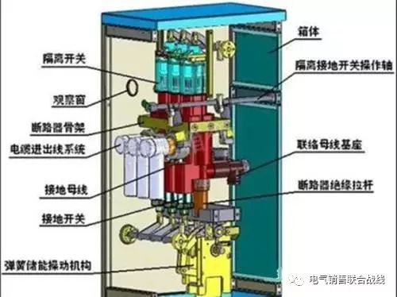
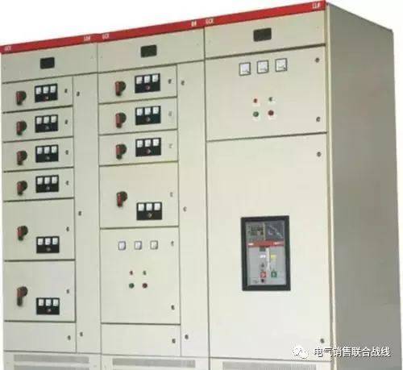

开关柜是指按一定的线路方案将一次设备、二次设备组装而成的成套配电装置，是用来对线路、设备实施控制、保护的，分固定式和手车式，而按进出线电压等级又可以分高压开关柜(固定式和手车式)和低压开关柜(固定式和抽屉式)。开关柜的结构大体类似，主要分为母线室、断路器室、二次控制室(仪表室)、馈线室，各室之间一般有钢板隔离。

内部元器件包括：母线(汇流排)、断路器、常规继电器、综合继电保护装置、计量仪表、隔离刀、指示灯、接地刀等。
从应用角度划分：
(1)进线柜：又叫受电柜，是用来从电网上接受电能的设备(从进线到母线)，一般安装有断路器、CT、PT、隔离刀等元器件。
(2)出线柜：也叫馈电柜或配电柜，是用来分配电能的设备(从母线到各个出线)，一般也安装有断路器、CT、PT、隔离刀等元器件。
(3)母线联络柜：也叫母线分断柜，是用来连接两段母线的设备(从母线到母线)，在单母线分段、双母线系统中常常要用到母线联络，以满足用户选择不同运行方式的要求或保证故障情况下有选择的切除负荷。
(4)PT柜：电压互感器柜，一般是直接装设到母线上，以检测母线电压和实现保护功能。内部主要安装电压互感器PT、隔离刀、熔断器和避雷器等。

(5)隔离柜：是用来隔离两端母线用的或者是隔离受电设备与供电设备用的，它可以给运行人员提供一个可见的端点，以方便维护和检修作业。由于隔离柜不具有分断、接通负荷电流的能力，所以在与其配合的断路器闭合的情况下，不能够推拉隔离柜的手车。在一般的应用中，都需要设置断路器辅助接点与隔离手车的联锁，防止运行人员的误操作。
(6)电容器柜：也叫补偿柜，是用来作改善电网的功率因数用的，或者说作无功补偿，主要的器件就是并联在一起的成组的电容器组、投切控制回路和熔断器等保护用电器。一般与进线柜并列安装，可以一台或多台电容器柜并列运行。电容器柜从电网上断开后，由于电容器组需要一段时间来完成放电的过程，所以不能直接用手触摸柜内的元器件，尤其是电容器组;在断电后的一定时间内(根据电容器组的容量大小而定，如：1分钟)，不允许重新合闸，以免产生过电压损坏电容器。作自动控制功能时，也要注意合理分配各组电容器组的投切次数，以免出现一组电容器损坏，而其他组却很少投切的情况。
(7)计量柜：主要用来作计量电能用的(千瓦时)，又有高压、低压之分，一般安装有隔离开关、熔断器、CT、PT、有功电度表(传统仪表或数字电表)、无功电度表、继电器、以及一些其他的辅助二次设备(如负荷监控仪等)。
(8)GIS柜：又叫封闭式组合电器柜，它是将断路器、隔离开关、接地开关、CT、PT、避雷器、母线等封闭组合在金属壳体内，然后以绝缘性能和灭弧性能良好的气体(一般用六氟化硫SF6)作为相间和对地的绝缘措施，适用于高电压等级和高容量等级的电网中，用作受配电及控制。
(9)断路器：正常工作情况下，断路器处于合闸状态(特殊应用除外)，接通电路。当进行自动控制或保护控制操作时，断路器可以在综保装置控制下进行电路的分断或接通操作。断路器不仅可以通断正常的负荷电流，而且能够承受一定时间的短路电流(数倍甚至几十倍的正常工作电流)，并可以分断短路电流，切除故障线路和设备。所以说，断路器的主要功能就是分断和接通电路(包括分断和接通正常电流、分断短路电流)。由于在分断和接通电路的过程中，断路器的动触头与静触头之间不可避免的要产生电弧。为了保护触头，减少触头材料的损耗和可靠分断电路，必须采取措施来尽快熄灭电弧，其中一种就是采用不同的灭弧介质填充到断路器的动、静触头间。按灭弧介质的不同断路器可以分为：油断路器(多油、少油)、六氟化硫(SF6)断路器、真空断路器、空气断路器等。我们在工程中经常接触到的高低压开关柜里的主要一次设备就是断路器。由于断路器的动、静触头一般都是被包在充满灭弧介质的容器中，所以断路器的分、合状态不可以直接判断，一般是通过断路器的辅助器件(如分合位指针等)来判别。
(10)隔离刀：隔离刀(或称隔离开关)由于有明显的断口可以识别接通或分断，主要是用来隔离高压电源的，以保证线路和设备的安全检修，能分断的电流很小(一般只有几个安培)。由于没有专门的灭弧装置，所以它不能用来分断故障电流和正常工作电流，不允许带负荷进行分断操作。
(11)熔断器：熔断器是一种简单的电路保护电器，其原理是当流经熔断器的电流达到或超过定值一定时间后，本身的熔体熔化，切断电路。其动作原理简单，安装方便，一般不单独使用，主要用来配合其他电器使用。主要动作特点：一是电流要达到一定值，该值在熔断器出厂前已经做好，无法更改;二是电流达到一定值后要经过一定的时间，该时间也是厂家做好的，无法更改，但是类型很多，包括延时动作、快速动作、超快速动作等;三是动作后本体损坏，不能重复使用，必须更换;熔断器是否熔断可以通过熔断指示器判别，也可通过熔体外观上判别;常用的保险丝、保险管都属于该类电器范围。
(12)负荷开关：负荷开关具有简单的灭弧装置，灭弧介质一般采用空气，可以接通和分断一定的电流和过电流，但是不能分断短路电流，不能用来切断短路故障。所以绝对不允许单纯用负荷开关来替代断路器;如果要采用负荷开关，必须与前面提到的高压熔断器配合使用(实际上往往用熔断器和负荷开关串联使用，用作简单的过负荷保护，以降低工程造价)。负荷开关与隔离刀类似，都有明显的断开间隙，可以很容易的判别电路是处于接通还是断开状态。
(13)变压器：
简单的说，变压器就是利用交变电磁场来实现不同电压等级转换的设备(实际上是电能的转换)，其变换前后的电压不发生频率上的变化。按照其用途可以分很多种，如电力变压器、整流变压器、调压器、隔离变压器，以及CT、PT等。我们在工程现场经常遇到的是电力变压器。
(14)与变压器相关的一些主要的技术参数包括：
❶、额定容量：指额定工作条件下变压器的额定输出能力(等于U×I，单位为kVA);
❷、额定电压：空载、额定分接下，端电压的值(即一次、二次侧电压值);
❸、空载损耗：空载条件下，变压器的损耗(也叫铁耗);
❹、空载电流：空载条件下，一次侧线圈流过的电流值;
❺、短路损耗：一次侧通额定电流，二次短路时所产生的损耗(主要是线圈电阻产生的);
❻、分接(抽头)的概念：为适合电网运行需要，一般的变压器高压侧都有抽头，这些抽头的电压值都是用额定电压的百分比表示的，即所谓的分接电压。例如，高压10kV的变压器具有±5%的抽头，就是说该变压器可以运行在三个电压等级：10.5kV(+5%)、10kV(额定)、9.5kV(-5%)。一般来说，有载调压变压器的抽头数(分接点)较多，如7分接点(±3×2.5%)和9分接点(±4×2%)等。由于不能够完全保证分接开关的同步切换，所以有载调压变压器一般不能够并联运行。
❼、有功负荷：电力系统中产生机器能或热能的负荷。但是负载中纯阻性的负荷只消耗有功功率，如电热、电炉、照明等电力负荷完全是有功负荷。而异步电动机、同步电动机的负载中既消耗有功功率，同时又消耗无功功率，其中作功产生机器能的部分属有功负荷。有功负荷要由发电机有功功率来供应。
❽、无功负荷：在电力负载中不作功的部分。只在感性负载中才消耗无功功率。如：变压器、电动机、空调、冰箱等。所以在发电机输出有功功率的同时，还需要提供无功功率。无功功率不能满足电网时，系统的电压将会下降，为了满足用户的需求，所以在变电所里要安装无功补偿器，来保持无功功率的平衡，这样才能维持电压水平。
❾、事故备用：电力系统中备用容量的组成部分之一。由于发电设备可能发生临时性或永久性的故障而影响供电，所以系统必须设置一定数量的事故备用电源，来确保电力设施的安全.
❿、系统解列：为了防止系统失步和事故扩大，将完整的电力系统分解为几个不再同步运行的独立系统的一种措施。解列后某些局部系统可能会发生功率不足，频率和电压的下降因此需要切除部分负荷，来防止整个系统的稳定遭到破坏。
(15)PT(TV)/CT(AV)：
互感器实际上就是一种特殊的变压器，主要用来从电气上隔离一次回路与控制回路，从而扩大二次设备(仪表、综保等)的使用范围。采用PT/CT可以避免一次回路的高电压/大电流直接进入到二次控制设备(如：仪表、综保装置等)，也可以防止由于控制设备故障影响一次回路的运行。
❶、电流互感器(CT、AV)的特点是：一次侧绕组N1粗而少、二次侧绕组N2细而多，二次侧的额定电流I2一般为5A(根据N1I1=N2I2可以近似算出一次侧电流I1，或者根据一次侧电流I1选择相应变比的电流互感器)。由于CT在工作时一次绕组和二次绕组都是分别串联在一次回路与二次控制回路中的，根据变压器的特性U1I1=U2I2可以得出，二次侧在工作时的工作电压，该电压在开路时非常大，故CT是绝对不允许开路的。按照用途来划分，通常可以分为保护和测量用CT。测量CT在一次回路出现短路故障时，容易饱和，以限制二次电流(二次绕组侧电流I2)过大，达到保护综保装置的目的;而保护CT在一次回路出现短路故障时，不应出现保护现象，以保证综保装置可靠动作。
❷、变比：变压器高压侧绕组与低压侧绕组匝数之比称为变比，近似可用高压侧与低压侧额定电压之比表示。3、电压互感器(PT、AV)的特点是：一次绕组匝数N1多，二次绕组匝数N2少，相当于一个降压变压器(二次侧额定电压一般为100V)。由于PT在工作时一次绕组和二次绕组都是分别并联在一次回路和二次控制回路电压线圈的，而由于电压线圈的阻抗很大，所以PT二次侧的电流非常小，二次绕组近似于空负荷状态;但二次绕组本身的阻抗是很小的，所以如果二次绕组短路，则将会导致非常大的二次侧电流(N1I1=N2I2)。故PT的二次绕组绝对不能够短路。
(16)手车/抽屉：手车和抽屉分别是高压开关柜和低压开关柜的一部分，分别安装高压断路器和低压断路器及其继电器等元器件。由此划分出手车式开关柜(高压)和抽屉式开关柜(低压)，他们与固定式开关柜的功能是基本相同的，主要区别是方便了维护和检修(手车和抽屉都可以通过机械操作机构摇把来推进、拉出)。手车和抽屉一般都有工作(正常运行时)、试验(试投运和现场试验时)和退出(维护、检修时)三种位置状态。
(17)接地刀：接地刀(也叫接地开关)主要：一是用来在线路和设备检修时，为确保人员安全进行接地用的;二是可以用来人为地造成系统的接地短路，达到控制保护的目的。第一个作用很好理解，不做介绍。第二个作用是这样的：接地刀通常是接在降压变压器的高压侧，当受电端发生故障或者变压器内部故障时，接地刀开关应自动闭合，造成接地短路故障，迫使送电端(上端)断路器迅速动作，切断故障，所以说这是个人为的接地短路故障，目的就是保证送电端的断路器能够快速动作。
(18)主令电器：主令电器是一种机械操作的控制电器，对各种电气系统发出控制指令，用于系统内各种信号的转化和传输等，常用的转换开关、按钮、旋转开关、位置开关以及信号灯等都属于主令电器的范围。
(19)接触器：接触器是一种用于远距离频繁接通和开断交直流主电路及大容量控制电路的电器，主要控制对象是电动机、照明、电容器组等，分交流接触器和直流接触器。与断路器相比，不同之处在于：动作频率非常高(因此要求其电气寿命和机械寿命足够长);有较高的的开断和接通容量，但是一般用在1kV及以下的电压等级中，无法与断路器的几十千伏、几百千伏相比。
(20)继电器：继电器是用来在控制回路中控制其他电器(一般是一次电气主设备)动作或在主电路中作为保护用以及作信号转换用的电器，只适用于远距离的分断、接通小容量控制回路，比如：交流/直流电流继电器、电压继电器、时间继电器、中间继电器、热继电器等。
(21)试验
常见试验包括：
❶、型式试验：对按照某一设计要求而制造的一个或多个器件或设备所进行的试验，用以检验这一设计要求是否符合一定的规范。
❷、常规试验：也叫出厂试验，对每个器件或设备在制造中或完工后所进行的试验，用以判明器件或设备是否符合某项标准。
❸、介质试验：是检验介质电气特性的各种试验的总称，包括：绝缘、静电、耐压等。抽样试验：对一批产品中随机抽取的若干样品进行试验，也是用来判明样品是否符合某项标准的。
❹、寿命试验：确定产品在规定条件下可能达到的寿命的试验，或者是为评价分析产品的寿命特征而进行的试验，属破坏性试验。
❺、耐受试验：在包括一定时间内为一定目的所采取的特定运行等规定条件下，对产品进行的试验，如反复操作、短路、过电压、振动、冲击等，属破坏性试验。
❻、投运试验：在现场对产品所进行的试验，用以证明安装是正确的，产品运行是正常的。